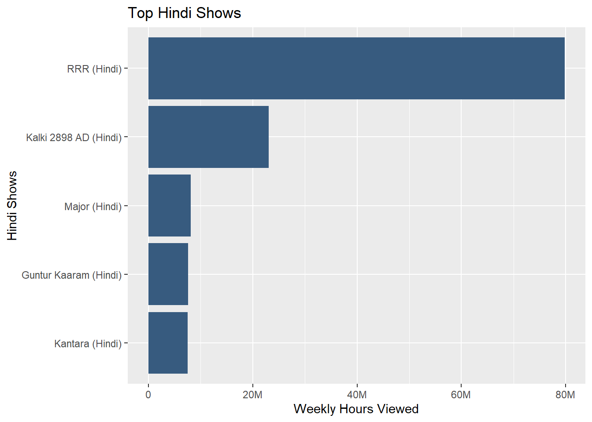
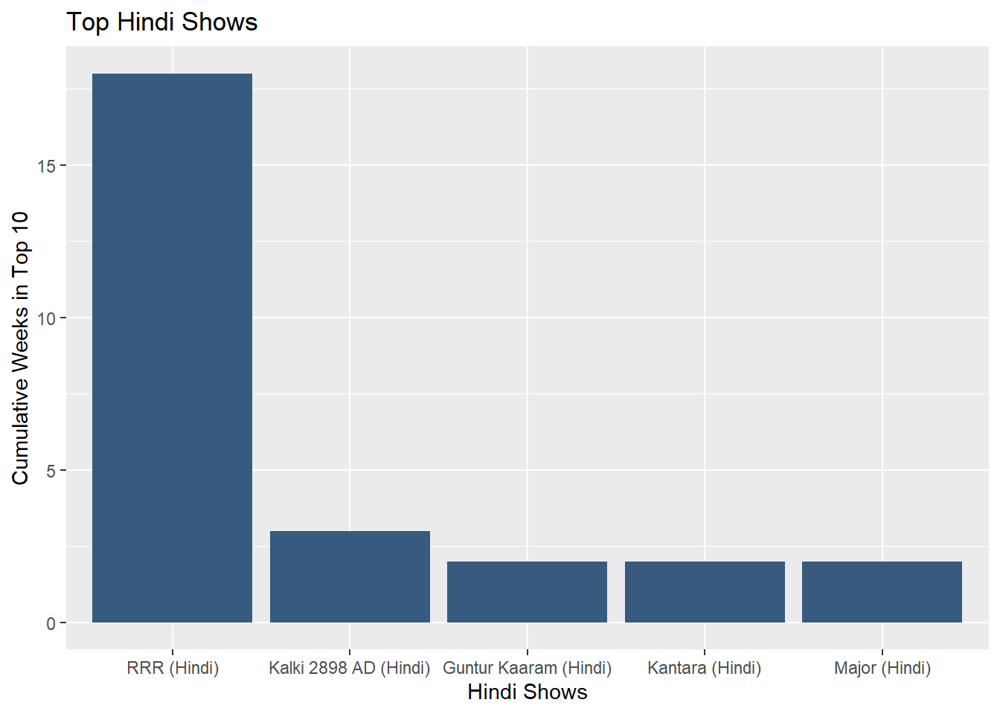

Netflix’s Most Popular Programs: An Indepth Analysis
Author
Stanley Louie
Published
October 3, 2025
1) SUMMARY
Netflix has been investing heavily in original TV series and film content with the main purpose of attracting a worldwide audience. Netflix is trying to put out a series of press releases highlighting their recent successes. The data analyzes the most popular Netflix films and TV shows between 2021 and 2025 in countries where Netflix is available and globally throughout the world.
Of the four categories of Netflix’s Global Top 10, TV (English) has the most total hours of global viewership with a staggering 66,060,030,000 weekly hour views.
The movie Red Notice has 201,390,863 weekly hour views in 2021.
Code
red_weekly_views <- GLOBAL_TOP_10 |>select(week, show_title, weekly_hours_viewed) |>filter(str_detect(week, "2021"),show_title =="Red Notice") |>summarise(total_wkly_hrs =sum(weekly_hours_viewed)) |>#convert Red Notice film time from 1hr 58 mins to 1.97hrssummarise(red_total_views = total_wkly_hrs/1.97)
There are 45 films that reached No.1 but did not originally debut with the most recent one being Unknown Number: The High School Catfish in the US.
Code
# Create a variable that stores only us filmsus_films <- COUNTRY_TOP_10 |>select(country_iso2,week, show_title, weekly_rank, category) |>filter(country_iso2 =="US", category =="Films")# Get all the films that eventually hit No.1 and most recent one.us_tops <- us_films %>%group_by(show_title) %>%summarise(debut_rank = weekly_rank[which.min(week)], first_hit_week =min(week[weekly_rank ==1]), hit_no1 =any(weekly_rank ==1)) %>%filter(hit_no1, debut_rank !=1) %>%select(show_title, debut_rank, first_hit_week) |>arrange(desc(first_hit_week))us_tops |>head(n=5) |>datatable(options=list(searching=FALSE, info=FALSE)) |>formatStyle(columns =names(us_tops),color ='white')
There are 7 TV shows tied that hit top 10 in the most countries during its debut week with 94 countries.
4) ENDGAME IN THE UPSIDE DOWN: STRANGER THINGS 5 BREAKS NEW GROUND
Stranger Things 5
Netflix’s cultural phenomenon, Stranger Things, will unveil their fifth and final season on November 26. Since its debut in 2016, Stranger Things has captivated and garnered a worldwide audience, jump starting the trajectory of many Netflix original series that we know and love today. From the Upside Down to the Overworld, there will be a world where Stranger Things will reclaim its throne as Netflix’s most popular TV show.
Throughout it’s 4 seasons, Stranger Things has amassed 423,997,143 daily viewers.
# A tibble: 1 × 3
show_title total_weekly_hrs_stranger_things daily_hours_viewed
<chr> <dbl> <dbl>
1 Stranger Things 2967980000 423997143.
Out of the 94 countries that Netflix operates in, Stranger Things have been in the top 10 for 93 of them with an average of 13 consecutive weeks in the top 10.
Comparing Stranger Things to the 7 TV shows that hit top 10 during its debut week in 94 different countries, Stranger Things ranks as the 2nd highest total weekly hours only behind the cultural phenomenon Squid Game. Nearly a decade after its debut, Stranger Things continue to prove its staying power and relevance in the ever changing landscape of TV shows. As the series heads toward its conclusion, its continued dominance among the most-watched shows reaffirm its legacy as one of Netflix’s defining franchises.
5) FROM BOLLYWOOD TO BLOCKBUSTERS: INDIA IS ON THE RISE
Netflix India
India is starting to become one of the big players in the market. Hindi films have started to make strides and hitting top weekly charts. The Hindi film RRR (Hindi) has been in the top 10 cumulatively for 18 weeks. The show has a weekly hour view of 79,780,000. Don’t sleep on the other films either! All Hindi films that have appeared in Netflix’s top 10 total up to 183,000,000 weekly hours viewed.
Code
top_hindi_films <- GLOBAL_TOP_10 |>select(show_title, weekly_hours_viewed) |>filter(str_detect(show_title, "Hindi")) |>group_by(show_title) |>summarise(total_wkly_hrs =sum(weekly_hours_viewed)) |>slice_max(total_wkly_hrs, n =5)ggplot(top_hindi_films, aes(x=reorder(show_title, total_wkly_hrs), y=total_wkly_hrs)) +geom_col(fill ="#375b7f") +coord_flip() +labs(x ="Hindi Shows", y ="Weekly Hours Viewed", title ="Top Hindi Shows")+scale_y_continuous(labels =label_number(scale_cut =cut_short_scale()))

Code
highest_cum_wks <- GLOBAL_TOP_10 %>%filter(str_detect(show_title, "Hindi")) |>group_by(show_title) |>slice_max(cumulative_weeks_in_top_10, n=1) %>%ungroup() %>%arrange(desc(cumulative_weeks_in_top_10)) %>%slice_head(n =5)ggplot(highest_cum_wks, aes(x=reorder(show_title, -cumulative_weeks_in_top_10), y=cumulative_weeks_in_top_10)) +geom_col(fill ="#375b7f") +labs(x ="Hindi Shows", y ="Cumulative Weeks in Top 10", title ="Top Hindi Shows")

6) WWE AND NETFLIX TAG TEAM TO BRING WRESTLING FANS UNMATCHED ACCESS
Netflix WWE
For over 70 years, WWE has been the heart and soul of sports entertainment, spanning across generations, developing iconic superstars, and generating legendary and unforgettable moments watched by millions across the globe. On January 6, 2025, WWE will officially be streamed live on Netflix. WWE fans will now be able to stream shows at anywhere, anytime, and on any device. Thousands of new audiences have already flocked in to watch WWE’s special Pay-Per-Views resulting in WWE getting into the weekly top 10 in 42 different countries!
In the map above, we can see that WWE has a strong presence in North America, South America, Europe, and parts of Asia. However, there are still many countries in Africa and the Middle East that have yet to embrace the thrill of WWE. With Netflix’s global reach, WWE has the potential to expand its audience and bring the excitement of wrestling to new regions. Speaking of regions, the graph below shows the number of times a WWE show has hit the weekly top 10. It’s not surprising that the 2 biggest events, WrestleMania and SummerSlam, are the most popular show.
Code
country_count <- wwe_tv %>%group_by(show_title) %>%summarise(num_countries =n_distinct(country_name))ggplot(country_count, aes(x=reorder(show_title, num_countries), y=num_countries)) +geom_col(fill ="#375b7f") +coord_flip() +labs(x ="WWE Shows", y ="# of Countries that WWE Hit Top 10", title ="WWE Popularity")


{kind=link}
{kind=link}
{kind=link}
{kind=link}